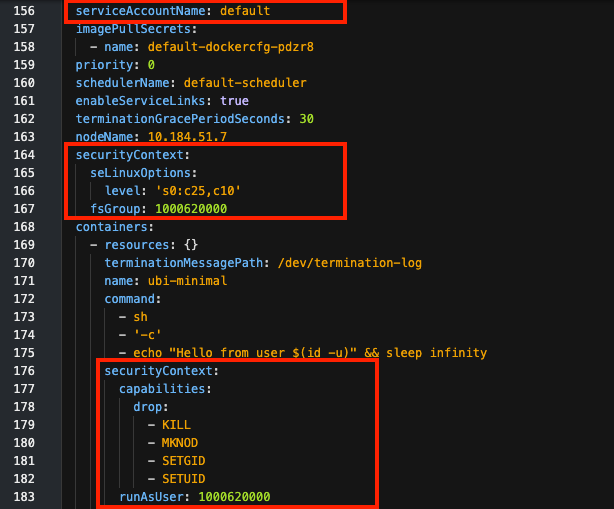

SCCチュートリアル
このハンズオンチュートリアルは、保護された Linux 機能へのアクセスを必要とするワークロードを Red Hat OpenShift クラスタ上に展開する方法を知りたいと考えている開発者やクラスタ管理者を対象としています。このチュートリアルでは、アプリケーションが必要とするアクセスでコンテナを構成するために、デプロイメントマニフェストでセキュアコンテキスト (SC) を指定する方法を示します。また、そのアクセスをデプロイメントに付与するために、セキュリティコンテキスト制約（SCC）を構成する方法についても説明します。
デフォルトでは、コンテナはプロセスが保護された関数を呼び出すのをブロックします。以下のような機能を実行するには、セキュリティコンテキスト（SC）が明示的にアクセスを要求する必要があります。 * 特定のユーザまたはグループとしてプロセスを実行する。 * プロセスを追加のグループのメンバーにする * 特権コンテナの実行 * KILL` コマンドなどの保護されたコマンドの実行
配置はこのアクセスを要求できますが、SCC はそれを承認する必要があります。このチュートリアルでは、作業の実行に必要な最小の権限セットでカスタム SCC を設定する方法と、このカスタム SCC に配置を関連付ける方法を示します。このベスト プラクティスは、必要に応じて追加の権限を要求および付与する方法を提供しながら、意図的および偶発的な被害からクラスタを保護するのに役立ちます。
学習目標¶
このチュートリアルでは、簡単なデプロイメントを作成します。デプロイメントは、仕様書で要求されたポッドを立ち上げます。このチュートリアルでは、エフェメラルボリュームをマウントし、1つのコンテナを実行するシンプルなポッドを使用します。リモートシェルを使ってコンテナにコマンドを実行し、実行環境やパーミッションを調べることができます。
その方法を学びます。
- ポッドの YAML をチェックして、設定されている SC と割り当てられた SCC を確認する。
- デフォルトのサービスアカウントとデフォルトのSCを使用して、アクセス権限をテストする。
- SCCの検証エラーを示すエラーイベントの確認
- SCCを作成して、サービスアカウントに割り当てる SCCを作成し、サービスアカウントに割り当てる * 特別な権限を要求するSCと、それを許可するSCCを使用する
セキュリティコンテキスト制約の概念¶
このハンズオンチュートリアルに挑戦する前に、SCCがどのように使用されるかを理解しておく必要があります。記事「Overview of security context constraints」では、これらの全体的な概念が説明されており、以下のようにまとめられています。
アプリケーションが保護された機能にアクセスすることは、3つのペルソナ間の合意である。
- 保護された機能にアクセスするアプリケーションを作成する 開発者 。
- アプリケーションが必要とするアクセスを要求するデプロイメントマニフェストを作成する デプロイヤー 。
- 管理者：要求されたアクセスをディプロイメントに許可するかどうかを決定します。
この図は、アプリケーションがリソースにアクセスするためのコンポーネントとプロセスを示しています。

1.開発者が、保護された機能へのアクセスを必要とするアプリケーションを作成します。 1.デプロイ担当者は、アプリケーションをデプロイするための デプロイメントマニフェスト を作成し、それを構成するポッドスペックを作成する。 * アプリケーションが必要とするアクセスを要求する セキュリティ・コンテキスト(SC) (ポッドおよび/またはコンテナごとに)、それによって以下を要求する * 要求されたアクセスを許可するための サービスアカウント です。 1.管理者は、要求されたアクセスを許可するサービスアカウントに セキュリティコンテキスト制約（SCC） を割り当てます。SCCは、サービスアカウントに直接、またはRBACロールやグループを介して間接的に割り当てることができます。 1.SCC は OpenShift の定義済み SCC の 1 つである場合もあれば、カスタム SCC である場合もあります。 1.SCC がアクセスを許可した場合、アドミッションプロセスによってポッドのデプロイが許可され、ポッドは指定されたとおりにコンテナを構成します。
_Note: OpenShiftのサービスアカウントは、通常のユーザーの認証情報を使用せずにプログラム的に使用される特別なタイプのユーザーアカウントです。
前提条件¶
- OpenShift クラスタへのアクセス
- クラスタ管理者権限
- OpenShift CLI (
oc) - bash または zsh ターミナル（または同様のもの）。
- 作業する OpenShift プロジェクト
Optional: このドキュメントまたはGitHub repoから、いくつかのコードをコピー＆ペーストする必要があります。ブラウザでレポを表示してそこからコードをコピーするか、レポをクローンしてコードのローカルコピーを作成することができます。
_Note: このチュートリアルでは、SCCがユーザー、グループ、ファイルシステムグループ、サプリメンタルグループなどのLinuxの機能を使って、ファイルのアクセス許可や所有権の設定を管理する方法を説明します。これらの機能についての再確認は、「【Linuxを学ぶ】101：ファイルのパーミッションとオーナーシップの管理」(https://developer.ibm.com/tutorials/l-lpic1-104-5/)をご覧ください。
見積もり時間¶
このチュートリアルを完了するには、約1時間かかります。
ステップ¶
1.デフォルトのデプロイメントを作成する * ベースイメージを使用してアプリケーションをシミュレートします。 * デフォルトのSCとSCCを調べる * コンテナのランタイムパーミッションをテストする 1.SC を使ったデプロイメントの試み * デプロイメントに特別なパーミッションを要求する * 割り当てられていない権限を要求したときに、デプロイメントがどのように失敗するかを確認する 1.SCCの作成と割り当て * デプロイメントの SC を許可する SCC を作成します。 * SCCを使用するロールを作成します。 * ロールをサービスアカウントにバインドする 1.SCC を使用するサービス アカウントを使用して配置を作成する * SCC を使用して配置を検証します。 * 結果のSCと選択されたSCCを調べる * コンテナの新しいランタイムパーミッションをテストする
ペルソナ¶
ステップ1、2、4は、デプロイメントを作成する権限を持つユーザー（デプロイ担当者）が行います。デプロイ担当者は、ポッドやコンテナが必要とするパーミッションを要求するSCを指定する責任があります。デプロイ担当者は、要求されたパーミッションを検証するために使用するサービスアカウントも選択できます。
ステップ3は、クラスタ管理者が実行します。SCCの作成と割り当ては、パーミッションを制限するために行うことができますが、パーミッションを緩和して脆弱性を作り出すこともできます。このため、クラスター管理者は、どのSCCをクラスター内で許可するか、いつプロジェクトのサービスアカウントに割り当てるかを決定する必要があります。
_WARNING:SCC に特権が与えられ、SCC がプロジェクト・サービス・アカウントに付与されると (例えば、ロール・バインディングを介して)、プロジェクト内のどのデプロイ担当者もその特権を利用することができます。
ステップ 1: デフォルトのデプロイメントの作成¶
この最初のステップでは、以下の方法を説明します。
- ベースイメージを使用してアプリケーションをシミュレートする
- デフォルトのSCとSCCを確認する。
- コンテナのランタイムパーミッションのテスト
見ることができます。
- デフォルトで割り当てられているSCC
- ポッドとコンテナに追加されたデフォルトのSC
- コンテナを実行するために割り当てられたユーザーID
- ユーザーのグループメンバーシップ
- ユーザーIDとグループメンバーシップがデータアクセスに与える影響
ベースイメージを使ったアプリケーションのシミュレーション¶
ここでは、シンプルなコンテナを使って、ファイルシステムに書き込むアプリケーションをシミュレートし、パーミッションを実験します。GUIを持つアプリケーションの代わりに、ベースイメージに過ぎないコンテナを実行し、そのコンテナ内でシェルを使用します。ファイルシステムの代わりに、コンテナ内に emptyDir ボリュームをマウントします。これにより、一時的にマウントされたボリューム上でLinuxコマンドを実行し、権限やアクセス制御をテストすることができます。
1.ターミナルで起動します。
* 認証情報を入力してログインしてください。
* プロジェクトに切り替えます。
``bash
oc ログイン <your-credentials> (認証情報)
oc プロジェクト <your-project>
```
1.デプロイメントマニフェストのYAMLファイルをthis GitHub repoからダウンロードするか、コピー/ペーストして、deploy_default.yamlという名前のファイルに保存します。
``yaml
アピバージョン: アプリ/v1
種類デプロイメント
metadata:
name: scc-tutorial-deploy-default
spec:
セレクタ。
matchLabels:
アプリ: SCC-チュートリアル-デフォルト
テンプレートです。
metadata:
ラベル
アプリ: SCC-チュートリアルデフォルト
spec:
コンテナを使用しています。
- イメージ: ubi8/ubi-minimal
名前: ubi-minimal
コマンドを実行します。['sh', '-c', 'echo "Hello from user $(id -u)" && sleep infinity'] です。
volumeMounts:
- mountPath:/var/opt/app/data
名前: データ
serviceAccountName: default
のボリュームです。
- emptyDir: {}.
名前: データ
```
1.以下のコマンドを実行して、デプロイメントを作成します。
``bash
oc create -f deploy_default.yaml
```
デフォルトのSCとSCCを調べる¶
詳細を確認するには、ポッドの完全なYAML記述を取得します。このチュートリアルでは、どの SCC が使用されたか、コンテナの SC、ポッドの SC を示すアノテーションが興味深い部分です。この例では、マニフェストで、通常は暗黙的に設定されている default サービスアカウントを明示的に指定して、完全性を確保しています。
結果を確認するには、OpenShift Web Console を使用するか、ターミナルで oc コマンドラインインターフェイスを使用します。
コマンドラインインターフェイスの使用¶
- ポッドの詳細を取得するには、ラベルに
app=scc-tutorial-defaultを指定し、出力オプションにyamlを指定してoc getを使用します。
``bash oc get pod -l app=scc-tutorial-default -o yaml ```
- 以下のコードリストでは、興味深い部分を強調しています。次のセクションで詳しく説明します。
``yaml ... metadata: アノテーション ... openshift.io/scc: 制限されています。 ... spec: コンテナを使用しています。 ... securityContext: capabilities: drop: - KILL - MKNOD - セトギッド - SETUID runAsUser: 1000620000 ... securityContext: fsGroup:1000620000 seLinuxOptions: レベル: S0:C25,C10 serviceAccount: default serviceAccountName: default ... ```
OpenShiftウェブコンソールの使用¶
-
デプロイの状態を確認します。
- サイドバーのプルダウンメニューで「Administrator」を選択します。
- Workloads を展開します。
- Deployments を選択します。
- Status に "1 of 1 pods" と表示されているはずです。
-
ポッドの詳細を確認します。
- deployment status "1 of 1 pods" link をクリックします。
- ポッド名
scc-tutorial-deploy-default-<generated-suffix>をクリックします。 - YAML タブを選択します。

何か見つかりましたか？¶
-
podのYAMLには、割り当てられたSCCが表示されています。
-
SCC は
annotationsに表示されています。 - デフォルトのデプロイメントには、
restrictedSCC が割り当てられていました。これは、サービスアカウントで利用可能な SCC の中で、最も優先度が高く、最も制限された SCC でした。

-
スクロールダウンすると、サービスアカウント、ポッドSC、コンテナSCが表示されます。
-
serviceAccountNameはdefaultです。これは後で変更することになります。 - ポッドの
securityContextにはseLinuxOptionsとfsGroupの設定が与えられていました。これらはプロジェクトのデフォルトから来ています。 - コンテナ用の
securityContextには、dropとrunAsUserといういくつかの特定のcapabilitiesが与えられました。これらもプロジェクトのデフォルトから来ています。コンテナのrunAsUserは、ポッドのfsGroupと同じであることに注意してください。

コンテナのランタイムパーミッションのテスト¶
これらの設定がコンテナの実行時パーミッションにどのような影響を与えるかを見てみましょう。
1.OpenShift Web Console を使用するか、ターミナルで oc コマンドラインインターフェイスを使用して結果を確認します。
コマンドラインインターフェイスを使う**。¶
- ポッド名を取得します。
``bash oc get pod -l app=scc-tutorial-default ```
- ポッドのコンテナにリモートシェルで入ります。
bash
oc rsh <pod-name> (ポッド名)
OpenShift Web コンソールを使用する**。¶
-
ポッドの詳細ページで「Terminal」タブを選択します。

2.ユーザーIDとグループメンバーを確認します。
| コマンド | 説明 |
|---|---|
| whoami | ユーザーIDを表示する |
| id｜自分のユーザーID（uid）、グループID（gid）、グループメンバーシップを表示する。 |
これは何を示すのでしょうか？
- 制限付きSCCでは、プロジェクトのデフォルトからユーザーIDとグループIDを取得しました。ディプロイメントマニフェストでユーザーIDやグループIDを指定しなかったことを覚えておいてください。
- ユーザー ID は、コンテナ
securityContext.runAsUserで割り当てられているものです。 - このユーザIDは、デフォルトのグループIDとして、rootグループ（ID 0）に割り当てられています。
- このユーザは、ファイルシステムグループのメンバーでもあります。この場合、ファイルシステムグループはユーザーIDと同じものになります。これは、ポッド
securityContext.fsGroupで割り当てられます。
3.ボリュームにファイルシステムグループがどのように使われたか見てみましょう。
| コマンド | 説明 |
|---|---|
| ls -ld / /tmp /var/opt/app/data｜ルートディレクトリ、tempディレクトリ、マウントされたボリュームのパーミッションを表示します。 |
これは何を示しているのでしょうか？
- マニフェストで指定された
/var/opt/app/dataにボリュームがマウントされました。 - ボリュームディレクトリのグループIDはfsGroup IDで、"set-group-ID "モードが設定されています (つまり、スティッキービットにより、このディレクトリに作成されたファイルは、このグループIDで所有されることになります)。
- 比較のため、rootおよびtempディレクトリでは、fsグループIDを使用しません。一時ディレクトリは、すべてのユーザが書き込み可能です。ルートディレクトリは、ルートユーザのみ書き込み可能です。
4.ファイルを書き込むとどうなるか見てみましょう。
| コマンド | 説明 |
|---|---|
echo hello > /var/opt/app/data/volume.txt |
ボリューム上のファイルに書き込みます。 |
echo hello > /tmp/temp.txt |
tempディレクトリのファイルに書き込む |
echo hello > /fail.txt |
ルートディレクトリにファイルを書き込もうとする |
ls -l /tmp/temp.txt /var/opt/app/data/volume.txt |
ファイルのパーミッションをチェックする |

これは何を示しているのでしょうか？
- ボリュームに書き込んだファイルは、あなたのユーザーIDとファイルシステムグループIDによって所有されています（スティッキービットがあるため）。これはとても重要なことです。次のステップでは、（このデフォルトのIDではなく）ファイルを共有したいグループを選択します。
- 一時ディレクトリに書き込んだファイルは、あなたのユーザーIDとデフォルトのグループID（root）に所有されています。このローカルファイルの動作を利用して、マウントされたボリュームのファイルシステムグループの効果を強調します。
- ルートディレクトリへの書き込み権限はありません。これは、あなたがルートとして、または特権ユーザーとして実行されていないことを強調するものです。
rootでの実行を回避する方法がわかったところで、次はユーザーやグループのIDを選択します。
Step 2: SC を使ったデプロイメントの試み¶
このステップでは、特定のユーザーIDを必要とし、さらにデータアクセスのために共有グループIDを必要とするアプリケーションをデプロイするシナリオを示します。この例では、前述のユースケースをカバーしています。
まず、ディプロイメント マニフェストで SC を使用して、ポッドとコンテナに想定されるユーザー ID とグループ ID を指定します。
これらのSCは、サービスアカウントに割り当てられているSCCと照合されます。SCを検証できるSCCがない場合は、ポッドは起動しません。
デプロイメントの特別なパーミッションを要求する¶
ポッドとコンテナにSCを追加して、アクセス制御のために以下の設定を要求しました。
- ユーザーID 1234として実行。
- グループID 5678として実行します。
- 補足のグループID 5777と5888を追加します。
- ファイルシステムのグループID 5555を使用する。
1.デプロイメントマニフェストのYAMLファイルをthis GitHub repoからダウンロードするか、コピー＆ペーストしてdeploy_sc.yamlという名前のファイルに保存します。
``yaml
アピバージョン: アプリ/v1
kind:デプロイメント
metadata:
name: scc-tutorial-deploy-sc
spec:
セレクタ
matchLabels:
アプリ: scc-tutorial-sc
template:
metadata:
ラベルを表示します。
アプリ: SCC-TUTORI-SC
spec:
コンテナを使用しています。
- イメージ: ubi8/ubi-minimal
名前: ubi-minimal
コマンドを実行します。['sh', '-c', 'echo "Hello from user $(id -u)" && sleep infinity'] です。
securityContext:
runAsUser: 1234
runAsGroup:5678
volumeMounts:
- mountPath:マウントパス: /var/opt/app/data
名前: データ
serviceAccountName: default
securityContext:
fsGroup:5555
supplementalGroups:[5777, 5888]
のボリュームです。
- emptyDir: {}
名前: データ
```
1.以下の oc create コマンドを実行して、デプロイメントを作成します。
````bash
oc create -f deploy_sc.yaml
```
割り当てられていない権限を要求した場合に、デプロイが失敗する様子をご覧ください。¶
1.SCCのエラーを確認します。
SCCが原因でデプロイが失敗した場合、レプリカセットの状態を確認する必要があります。レプリカの状態を確認するためのデプロイメントについて説明します。
``bash
oc describe deployment/scc-tutorial-deploy-sc
```
出力には `ReplicaFailure` が表示されます。
```bash
$ oc describe deployment/scc-tutorial-deploy-sc
...
レプリカです。 1 希望｜0 更新｜0 合計｜0 利用可能｜1 利用不可
...
条件
タイプ ステータス 理由
---- ------ ------
進行中 True NewReplicaSetCreated
利用可能な状態になっている 偽 MinimumReplicasUnavailable
ReplicaFailure True FailedCreate
OldReplicaSets: <none>の場合
NewReplicaSet: scc-tutorial-deploy-sc-5c4f64575c (0/1個のレプリカが作成されました)
...
```
レプリカセットが失敗した理由をもっと具体的に知りたい場合は、`oc get events`を使います。
```
バッシュ
$ oc get events | grep replicaset/scc-tutorial-deploy-sc
2m37s Warning FailedCreate replicaset/scc-tutorial-deploy-sc-5c4f64575c Error creating: pods "scc-tutorial-deploy-sc-5c4f64575c-" is forbidden: unable to validate against any security context constraint: [fsGroup:無効な値です。fsGroup: Invalid value: []int64{5555}:5555は許可されたグループではありません spec.containers[0].securityContext.securityContext.runAsUser: Invalid value: 1234: must be in the ranges:[1000620000, 1000629999]]
```
FailedCreate`の警告は、`fsGroup`と`runAsUser`の値が原因で、どのセキュリティコンテキスト制約*に対しても検証できなかったことを明確に示しています。
このエラーは、ディプロイメント マニフェストが特定のパーミッションを要求し、デフォルトのサービス アカウントがこれらのパーミッションを許可する SCC を使用できないために発生します。これは、ディプロイメント担当者がマニフェストで要求したアクセス数が多すぎるか、クラスタ管理者がより多くのアクセスを許可するSCCを提供する必要があることを示しています。
ディプロイメントがディプロイされていないように見えるかもしれませんが、それは問題ではありません。scc-tutorial-deploy-sc`という名前のディプロイメントが作成されています。それを探すには、`oc get deployment` または OpenShift Web Console のいずれかを使用できます。scc-tutorial-deploy-sc-<generated-suffix>`という名前のレプリカセットも作成されていますが、どちらも1ポッド中0ポッドが作成されたことを示しており、レプリカセットには問題を説明するイベントがあります。
つまり、最終的にデータアクセスエラーが発生するアプリケーションをデプロイするのではなく、原因を説明するエラーメッセージを表示して早期に失敗させるのです。早期に失敗することは、間違いなく良いことです。このアプリケーションに必要な特別なパーミッションを明確に示すことで、開発者、デプロイ担当者、セキュリティ管理者は、このデプロイメントに必要な特別なセキュリティ要件をうまく伝えることができます。
ステップ 3: SCC の作成と割り当て¶
_Note: このステップでは、クラスタ管理者である必要があります。
ここからは、SCCとロールベースのアクセス制御（RBAC）を使用して、ワークロードが作業を行うために必要な権限を与えることになります。
1.YAMLファイルをthis GitHub repoからダウンロードするか、コピー/ペーストして、scc-tutorial-scc.yamlという名前のファイルに保存します。
``yaml
種類: SecurityContextConstraints
APIバージョン: v1
メタデータ
名前：Scc-Tutorial-Scc
allowPrivilegedContainer: false
runAsUser:
type:マストランアズレンジ
uidRangeMin:1000
uidRangeMax: 2000
seLinuxContextです。
タイプを使用します。ランアサニー
fsGroup:
タイプマストランア
の範囲である。
- 最小値：5000
max:6000
サプリメンタルグループ。
タイプを指定します。MustRunAs
の範囲になります。
- ミニ：5000
max:6000
```
1.以下のコマンドを実行して、SCCを作成します。
``bash
oc create -f scc-tutorial-scc.yaml
```
1.新しいサービスアカウントを作成します。
次のコマンドを実行してサービスアカウントを作成してください。デフォルトのアカウントを変更する必要はありません。
``bash
oc create sa scc-tutorial-sa
```
1.YAMLファイルをthis GitHub repoからダウンロードするか、コピー&ペーストして、rbac.yamlという名前のファイルに保存します。
``yaml
---
kind:ロール
apiVersion: rbac.authorization.k8s.io/v1
メタデータです。
name: use-cc-tutorial-scc
ルール
- apiGroups:["security.openshift.io"] です。
のリソースを使用します。["securitycontextconstraints"] (セキュリティコンテキスト制約)
resourceNames:["scc-tutorial-scc"] です。
動詞を指定します。["use"]
---
種類ロールバインディング
apiVersion: rbac.authorization.k8s.io/v1
メタデータを表示します。
name: use-cc-tutorial-scc
のサブジェクトです。
- kind: ServiceAccount
名前: scc-tutorial-sa
roleRef:
kind:ロール
name: use-cc-tutorial-scc
apiGroup: rbac.authorization.k8s.io
```
1.以下のコマンドを実行してロールを作成し、サービスアカウントにバインドします。
``bash
oc create -f rbac.yaml
```
自分のやったことを振り返る¶
クラスタ管理者として
- SCCを
scc-tutorial-sccという名前で作成しました。 - scc-tutorial-sa`というサービスアカウントを作成しました。
- SCC-tutorial-scc`という名前でロールとロールバインディングを作成しました。
ロールとロールバインディングの作成の一環として、SCCをロールに関連付け、それをサービスアカウントにバインドしました。これにより、サービスアカウントとSCCが関連付けられ、サービスアカウントとして実行しているポッドがSCCにアクセスできるようになります。
次のステップでは、デプロイ担当者として、このサービスアカウントを使用して、前のステップでSCの検証に失敗したデプロイメントを修正します。
手順4: SCCを使用できるサービスアカウントを使用してデプロイを作成する¶
これでSCCを使ってデプロイを検証することができます。
3回目の試行では、サービスアカウント名を変更して、新しいサービスアカウントを使用します。
1.YAMLファイルをthis GitHub repoからダウンロードするか、コピー/ペーストして、deploy_sc_sa.yamlという名前のファイルに保存します。
``yaml
アピバージョン: アプリ/v1
kind:デプロイメント
metadata:
name: scc-tutorial-deploy-sc-sa
仕様です。
セレクタ
matchLabels:
アプリ: scc-tutorial-sc-sa
template:
metadata:
ラベルを表示します。
アプリ: SCC-TUTORI-SC-SA
spec:
コンテナを使用しています。
- イメージ: ubi8/ubi-minimal
名前: ubi-minimal
コマンドを実行します。['sh', '-c', 'echo "Hello from user $(id -u)" && sleep infinity'] です。
securityContext:
runAsUser: 1234
runAsGroup:5678
volumeMounts:
- mountPath:マウントパス: /var/opt/app/data
名前: データ
サービスアカウント名： scc-tutorial-sa
securityContext:
fsGroup:5555
supplementalGroups:[5777, 5888]
のボリュームです。
- emptyDir: {}
名前: データ
```
1.以下のコマンドを実行して、デプロイメントを作成します。
``bash
oc create -f deploy_sc_sa.yaml
```
カスタムSCとSCCを追加した後のExamine¶
SCをカスタマイズし、それを検証するためのカスタムSCCを作成したので、その結果を見てみましょう。
詳細を見るには、ポッドの完全なYAML記述を入手してください。このチュートリアルでは、使用されたSCC、コンテナのsecurityContext、ポッドのsecurityContextを示すアノテーションが興味深い部分です。また、scc-tutorial-saサービスアカウントを使用したことも確認しておきましょう。
OpenShift Web Consoleを使用するか、ターミナルでocコマンドラインインターフェイスを使用して、結果を確認してください。
コマンドライン・インターフェースを使う¶
-
ポッドの詳細を取得するには、ラベルに
app=scc-tutorial-sc-saを指定し、出力オプションにyamlを指定してoc getを使用します。``bash oc get pod -l app=scc-tutorial-sc-sa -o yaml ```
-
以下のコードリストでは、興味深い部分を強調しています（次のセクションで詳しく説明します）。
``yaml ... metadata: アノテーション ... openshift.io/scc: scc-tutorial-scc ... spec: コンテナを使用しています。 ... securityContext: runAsGroup:5678 runAsUser: 1234 ... volumeMounts: - mountPath:/var/opt/app/data ... securityContext: fsGroup:5555 サプリメンタルグループ - 5777 - 5888 サービスアカウント: scc-tutorial-sa サービスアカウント名： SCC-TUTORIAL-SA ... ```
OpenShiftウェブコンソールの使用¶
-
デプロイメントの状態を確認します。
1.サイドバーのプルダウンメニューで「Administrator」を選択します。 1.ワークロード」を選択します。 1.Deployments」を選択します。 1.scc-tutorial-deploy-sc-sa`を検索します。 1.Status**に "1 of 1 pods "と表示されているはずです。

-
ポッドの詳細を確認します。
1.デプロイメントステータス 1 of 1 pods のリンクをクリックします。 1.ポッド名
scc-tutorial-deploy-sc-sa-<generated-suffix>をクリックします。 1.YAML*」タブを選択します。
何か見つかりましたか？¶
-
ポッドのYAMLには、割り当てられたSCCが表示されています。
-
SCC は
annotationsに表示されています。 - このデプロイメントでは、新しい SCC である
scc-tutorial-sccを使用しました。これは最も優先度が高く、最も制限の厳しいSCCで、SCを検証することができました（サービスアカウントで利用できました）。

-
下にスクロールすると、ポッドの仕様が表示されます。デフォルトではなく、マニフェストでSCを決定していることがわかります。
-
ポッドの
SecurityContextには、fsGroup:5555とsupplementalGroups:[5777, 5888]. - コンテナの
SecurityContextには、runAsUser: 1234とrunAsGroup:5678. - ボリュームは
/var/opt/app/dataにマウントされました。 ServiceAccountNameはscc-tutorial-sa(先ほど作成して、SCCを1つ割り当てたサービスアカウント)です。

コンテナのランタイムパーミッションのテスト¶
1.OpenShift Web コンソールまたはターミナルの oc コマンドラインインターフェイスを使用して、結果を確認してください。
OpenShift Web コンソールの使用**。¶
- ポッドの詳細ページで「Terminal」タブを選択します。
コマンドラインインターフェースを使用する**。¶
-
ポッド名を取得します。
``bash oc get pod -l app=scc-tutorial-sc-sa ```
-
ポッドのコンテナにリモートシェルで入ります。
bash oc rsh <pod-name> (ポッド名)
2.ユーザーIDとグループメンバーの確認
| コマンド | 説明 |
|---|---|
whoami |
自分のユーザーIDを表示する |
id |
ユーザーID（uid）、グループID（gid）、グループ・メンバーシップを表示する |

これは何を示しているのでしょうか？
- ディプロイメントマニフェストに記載されているユーザー ID (
uid) またはグループ ID (gid) を使用しています。 - 要求した補足的なグループも作成されており、ユーザーはそれらのグループのメンバーになっています。
- ユーザーは、ファイルシステムグループのメンバーでもあります。このIDはポッドの
securityContext.fsGroupで指定されています。
3.ファイルシステムグループがお客様のボリュームにどのように使用されたかを確認するには、このコマンドを使用します。
| コマンド | 説明 |
|---|---|
| ls -ld / /tmp /var/opt/app/data`｜ルートディレクトリ、tempディレクトリ、マウントされたボリュームのパーミッションを表示します。 |
これは何を示しているのでしょうか？
- ボリュームは
/var/opt/app/dataにマウントされています（マニフェストで指定されています）。 - ボリュームディレクトリのグループIDは、マニフェストで要求した
fsGroupです。 - 「set-group-ID」モードが設定されています（つまり、スティッキービットにより、このディレクトリで作成されたファイルは、このグループIDで所有されるように強制されます）。
rootとtempのディレクトリは、デフォルトの例から変更されていません。
4.ファイルを書き込んだらどうなるか見てみましょう。
| コマンド | 説明 |
|---|---|
echo hello > /var/opt/app/data/volume.txt |
ボリューム上のファイルへの書き込み |
echo hello > /tmp/temp.txt |
temp ディレクトリのファイルに書き込む |
echo hello > /fail.txt |
ルートディレクトリにファイルを書き込もうとする |
ls -l /tmp/temp.txt /var/opt/app/data/volume.txt |
ファイルのパーミッションをチェックする |

これは何を示しているのでしょうか？
/tmpでは、作成したファイルの所有者は1234/5678(プロジェクトのデフォルトである1000620000/rootではなく、あなたが指定したuid/gid) になっています。- ボリューム上では、作成したファイルの所有者は
1234/5555（1000620000/1000620000のようなプロジェクトのデフォルトではなく、あなたが指定したuid/fsGroup）になります。 - root として実行していない、または root グループを使用していない。
- ボリュームが共有ストレージであれば、異なるユーザーIDのコンテナでも、同じグループのメンバーとデータを共有できるはずです。
- この例では
fsGroupのみを使用していますが、指定した他の補助的なグループも作成され、ユーザーに割り当てられていることがわかります。
これらの例で特に興味深いのは、ファイルシステムグループ（fsGroup）の動作です。この特別なグループは、ボリュームのマウントに使用されます。fsGroup`をサポートするストレージでファイルシステムをバックアップすると、このディレクトリに作成されたファイルの所有者がグループになるように、ディレクトリのパーミッションが設定されます。これにより、同じグループの異なるユーザーとして実行されるコンテナのファイル共有が可能になります（たとえば、1つのポッドに2つのコンテナがある場合や、パーシステントボリュームを使用する複数のポッドインスタンスなど）。他のディレクトリや他の種類のストレージについても、目的の補足グループをディレクトリまたはファイルの所有者として設定することで、補足グループを同様に使用できます。
クリーンアップ¶
このチュートリアルで作成したリソースは、以下のコマンドで削除できます。
``bash oc delete deployment/scc-tutorial-deploy-default oc delete deployment/scc-tutorial-deploy-sc oc delete deployment/scc-tutorial-deploy-sc-sa oc delete rolebindings/use-scc-tutorial-scc oc delete role/use-scc-tutorial-scc oc delete sa/scc-tutorial-sa oc delete scc/scc-tutorial-scc ```
まとめ¶
このチュートリアルでは、SCとSCCの設定に関するいくつかのハイライトと、それらが実際の展開でどのように機能するかを学びました。ハイライトは以下の通りです。
1.実行中のポッドの YAML をチェックして、クラスタがポッドに割り当てた SCC を確認できます。
1.SC を使用して、デプロイメントが以下の許可を要求していることを示しています。
* ユーザー ID 1234 としての実行
* グループ ID 5678 としての実行
* 補助グループ 5777 および 5888 を使用する。
* ボリュームの読み取り/書き込みを許可するために、fsGroup 5555 を使用する。
1.デフォルトのサービスアカウントと制限付きSCCを使用してSCCの検証が失敗することを許可し（これらすべてのことを行う権限がまだなかったため）、エラーメッセージを見つける方法を学びました。
1.必要な権限を持つSCCを作成しました。
1.サービスアカウントを作成し、そのアカウントにSCCを割り当てた。
1.思い通りのSC設定でポッドとコンテナを作成できました。
次のステップ¶
1.自分のアプリケーションやサードパーティのアプリケーションのイメージを使って、同様の作業を行ってみてください。
1.他のSCやSCCの設定を試してみる。
1.アプリケーションが仕事をするのに必要な最小限の権限を与えることを学ぶ。